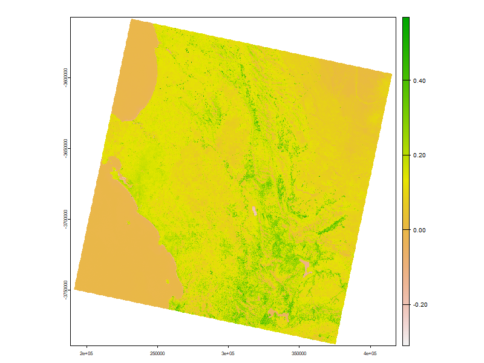
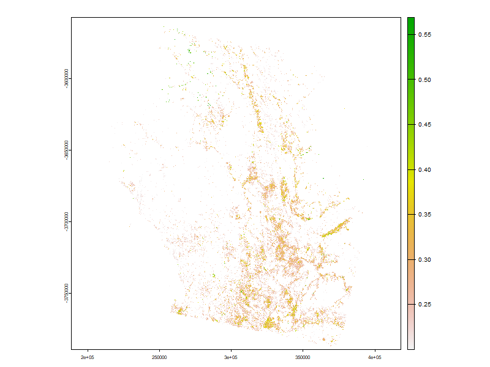
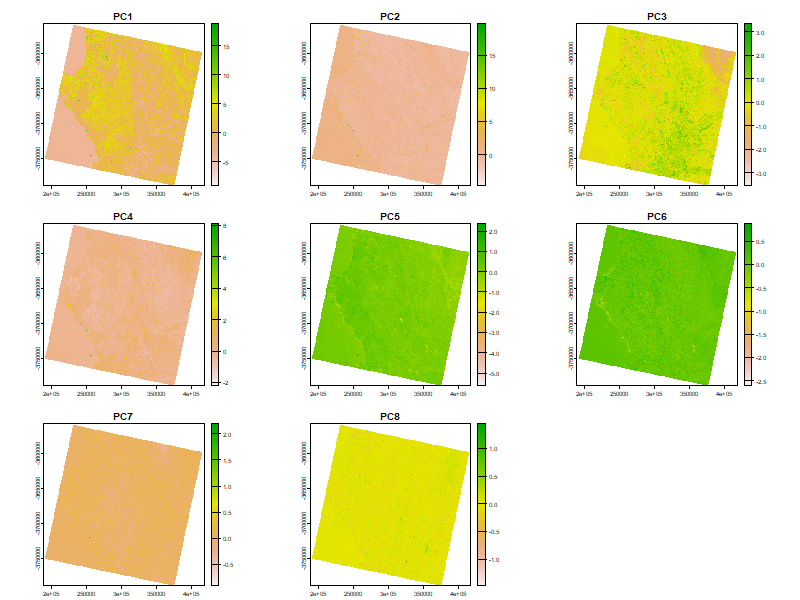

3 Week 3 - Remote sensing data
3.1 Summary
This week’s content is very varied and covers the aspects of corrections, data joining and data enhancement. These operations are necessary, but there are many ways to implement them, and need to be flexible in choosing the method according to the specific problem. The following is a summary of some of the highlights.
3.1.1 Corrections
3.1.1.1 Geometric correction
Two ways modelling:
Input to output (forward mapping)
Output to input (backward mapping)
We usually use backward mapping, because every value in the output pixel can get a value in the original input image.
3.1.1.2 Atmospheric correction
Dark object subtraction (DOS) or histogram adjustment
Psuedo-invariant Features (PIFs)
Change digital brightness values into scaled surface reflectance.
Empirical line correction
3.1.1.3 Orthorectification correction / topographic correction
A subset of georectification
Removing distortions
Atmospheric correction happens before topographic correction
3.1.1.4 Radiometric calibration
Sensors capture image brightness and distributed as a Digital Number (DN, and no units)
Radiometric calibration = DN to spectral radiance
3.1.1.5 Analysis ready data (ARD)
Remote sensing data has been corrected (like Landsat data).
3.1.2 Data joining and enhancement
3.1.2.1 Joining data sets
“Mosaicking” in remote sensing: feather the images together to create a seamless mosaic or image.
3.1.2.2 Image enhancement
Contrast enhancement methods (only applied to digital numbers)
Minimum - Maximum
Percentage Linear and Standard Deviation
Piecewise Linear Contrast Stretch
Band ratioing methods
NDVI
Tasselled cap
Normalized Burn Ratio
Filtering
Low pass filter (averages the surrounding pixels)
High pass filter (enhance local variations)
Edge enhancement (image sharpening)
Principal component (dimensionatliy reduction)
Texture (spatial variation of gray values)
Fusion
3.1.3 Practical
I focused on the data enhancement part of this week’s exercise, and here are some of the results of the experiment.
3.1.3.1 The Normalised Difference Vegetation Index (NDVI)
The Normalized Difference Vegetation Index (NDVI) is a widely used vegetation index derived from satellite images. Plants have a unique reflectance characteristic, they reflect more near-infrared (NIR) light and absorb more visible light. When plants are healthy, they have a high chlorophyll content, which allows them to absorb more light in the red region of the spectrum and reflect more light in the NIR region. So NDVI uses this characteristic of plants to differentiate healthy vegetation from non-vegetation or unhealthy vegetation. The formula is as follows:
\[ NDVI = \frac{NIR-Red}{NIR+Red} \]
The figure below shows the NDVI results for the northern part of Cape Town.

Areas with NDVI values greater than or equal to 0.2 were extracted. From the figure, it can be observed that the vegetation cover is concentrated in the south-eastern part of the country, while the north-western part of the country has very little vegetation cover.

3.1.3.2 Principal Component Analysis (PCA)
PCA identifies duplicate data over multiple channels, reduces redundancy, and speeds up the processing time. It is useful to run the principal component analysis on multiple bands, as we found that the latter components did not contain more useful information. Most of the variance (eigenvalues) lies in principal components 1, 2 and 3, then only these three principal components need to be used.
| Components: | PC1 | PC2 | PC3 | PC4 | PC5 | PC6 | PC7 | PC8 |
|---|---|---|---|---|---|---|---|---|
| Standard deviation | 2.655 | 0.71471 | 0.47307 | 0.3667 | 0.24626 | 0.10550 | 0.08700 | 0.05873 |
| Proportion of Variance 0.881 | 0.881 | 0.06385 | 0.02797 | 0.0168 | 0.00758 | 0.00139 | 0.00095 | 0.00043 |
| Cumulative Proportion | 0.881 | 0.94487 | 0.97285 | 0.9897 | 0.99723 | 0.99862 | 0.99957 | 1.00000 |

3.2 Applications
This week’s application focuses on the NDVI and PCA sections, where a great deal of research exists and I will be looking for topics of interest to discuss.
3.2.1 NDVI
A study (Eisfelder et al., 2023) used satellite imagery to observe changes in plant growth in Europe and North Africa over a 30-year period. They used the NDVI index to measure plant growth, comparing the amount of light absorbed and reflected by plants. However, sometimes cloud cover can affect the NDVI results. And the study looks at changes over a long period of time, but may not capture the rapid changes that occur from one year to the next. In addition, the NDVI index may not be applicable to all types of plants.
Another study (Priya et al., 2023) used satellite imagery from 2011 to 2021 to track how Tamil Nadu’s plants and trees have changed over time. The researchers used two main tools, NDVI and enhanced vegetation index (EVI). However studies using NDVI and EVI may equally face problems such as cloud cover affecting the quality of satellite images, which may lead to inaccurate vegetation assessment. And the resolution of MODIS data at 250 metres may not capture small-scale vegetation changes, which may be important for understanding local agricultural practices or small forested areas. In addition, the study was limited to 11 years, which may not be sufficient to understand long-term vegetation dynamics or the effects of climate change on vegetation patterns.
In addition to this, there is a study (Costa, Lameira and Costa, 2023) that uses high-resolution Pléiades satellite images with four spectral bands to analyse the structure of vegetation and uses a vegetation index called NDVI to help monitor Brazilian vegetation, with denser vegetation having higher NDVI values. But the study only covers two forest fragments, which may not be representative of Brazil’s diverse forest ecosystems, limiting the generalisability of the results. It uses NDVI values derived from Pléiades imagery at a spatial resolution of 2 metres, which may not capture very small patterns or changes in vegetation. And there is no mention of comparisons with ground truth or other satellite data to validate NDVI results from Pléiades imagery.
3.2.2 PCA
One study (Dai, 2023) used PCA to process images taken by satellites, including reducing the size of colour satellite images, reducing unwanted random patterns or “noise” in those images and combining different types of satellite images to obtain more information. However, this study does not mention the computational resources required for PCA, which could be important and affect its usefulness for some users. And there is no comparison of PCA with other image processing techniques.
And a study (Mishra et al., 2023) used PCA to identify and extract the most important features in low-resolution multispectral (LRMS) images and combined it with image enhancement techniques to obtain higher-quality images for uses such as agriculture and security. However, the method may affect the quality of remote sensing images under different environmental conditions. Also the computational complexity of the method is not discussed, which is crucial for practical applications where processing time is a factor. In addition, the potential loss of information may occur in the spatial or spectral domain, which is also an aspect that needs to be considered in the method.
3.3 Reflections
Once again, I lament the fact that this week covered a lot of remote sensing and was more theoretical, due to the calibration aspect. While in practice, these theoretical formulas are yet easy to use in R, but take a while to run. What was really difficult was the texture analysis, which is such a computationally intensive task that it took a long, long time to perform. Cropping out smaller study areas is a better way to deal with this, or using Google Earth Engine.
This week I delved into both NDVI and PCA. Although the formula for NDVI seems relatively simple, it needs to be adjusted for different satellite data. It is a simple but effective way to get a good idea of the vegetation cover in an area. As for PCA, it is perfect for dealing with remotely sensed data that has many dimensions, thus showing which aspect of the data is crucial, and researchers can therefore focus more on the important parts of the data.
By studying this week’s content, I have learnt what appropriate methods should need to be applied in order to deal with different problems (calibration to data connectivity to data enhancement problems). Although many of the methods were not all practised due to time, this at least provided me with an idea of how to solve the problem.